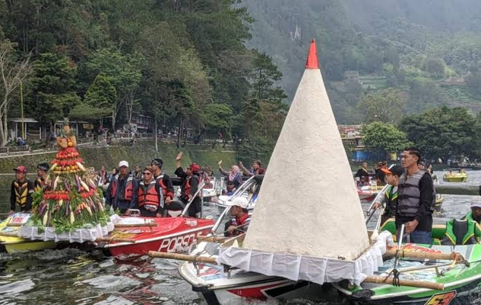

Setiap tahun, ketika musim panen tiba, desa-desa di Karanganyar menggelar Sedekah Bumi — sebuah tradisi turun-temurun yang merayakan kelimpahan hasil bumi sekaligus memanjatkan rasa syukur. Warga berkumpul membawa hasil tani, gunungan tumpeng, dan aneka sesaji untuk diarak menuju balai desa atau punden setempat.
Lebih dari Sekadar Ritual
Sedekah Bumi bukan hanya seremoni keagamaan, melainkan juga ruang sosial yang mempererat kebersamaan warga. Gotong royong dalam mempersiapkan acara, doa bersama, hingga pertunjukan seni tradisional seperti tari tayub dan wayang kulit menjadikan tradisi ini sebagai perayaan identitas kolektif masyarakat agraris Karanganyar.
"Bumi memberi tanpa diminta, maka sudah sepatutnya kita berterima kasih tanpa diminta pula."
Fakta Menarik
- Digelar setiap tahun setelah musim panen raya, biasanya di bulan Sura (kalender Jawa)
- Gunungan hasil bumi diarak keliling desa sebelum dibagikan kepada warga
- Diiringi pertunjukan seni tradisional seperti tayub, reog, dan wayang kulit
- Masih aktif dirayakan di berbagai desa di Karanganyar hingga hari ini

Mengapa Penting?
Di tengah modernisasi, Sedekah Bumi menjadi pengingat bahwa hubungan manusia dengan alam perlu dijaga dengan rasa hormat. Tradisi ini mengajarkan generasi muda untuk tidak melupakan akar agraris dan nilai gotong royong yang membentuk karakter masyarakat Karanganyar.